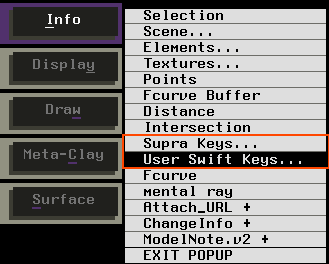

Q: Softimage3D Extremeパッケージには、どのような機能が含まれますか？
Q: DXFファイルをSoftimage3Dの形式に変換する方法は？
Q: コマンドラインからSoftimage3Dのシーンをレンダリングする方法は？
Q: Softimageの画像ファイル用のPhotoshop Pluginはありますか？
Q: TIFFやPICTフォーマットのファイルをSoftimageの画像ファイルに 変換する方法は？
Q: スタンドアローンコマンドでSoftimageの画像ファイルを表示する方法は？
Q: キーボード・ショートカットの一覧はどのようにしたらわかりますか？
Q: Adobe Illustratorで作成したepsファイルの入力の方法は？
A: dxf2softというスタンドアローンコマンドを使用してDXFファイルからSoftimage3Dファイルの形式に変換ができます。
コマンドは、$SI_LOCATION/3D/binの下にあります。
A: soft -RでSoftimage3Dのシーンをレンダリングできます。
A: PhotoShopのプラグインは、Softimage社のFTPサイトに登録されています。どちらもフリーウェアです。
A: imgconvというスタンドアローンコマンドを使ってTIFFやPICTファイルを変換することができます。
A: Softimageの画像ファイルを表示させるスタンドアローンコマンドには、displayとshowpicがあります。
showpicで表示した場合、Aキーを押すとAlphaチャネルを表示します。(Rキー＝Redチャネル、Gキー＝Greenチャネル、Bキー＝Blueチャネル)
A: Info→Supra Keysを選択するとキーボード・ショートカットの一覧が表示されます。

A: Save→Selected Modelsで選択しているモデルをデータベースにセーブできます。
A: MODELモジュールのGet→Eps2SoftでepsファイルをSoftimage3Dに入力できます。
A: ポリゴンモデルを選択してInfo→Selectionでダイアログボックスを開き、Facetedを指定するとスムースシェーディングを解除できます。
使用例）
sample.dxfというファイルをSoftimage3Dの形式に変換する場合。
dxf2soft -G -M -o DXF_OUT -R /usr/softimage35/3D/rsrc sample.dxf
-G オプション：同一階層のメッシュを一つのグループにまとめます。
-M オプション：形状データのみの変換を行います。
-o オプション：出力先のデータベース名を指定します。SI_DBDIRを環境設定しておく必要があります。データベース名は、DatabaseDir.rsrcに登録しておく必要があります。
-R オプション：Softimage3Dのリソースパスを指定します。Softimage3Dを起動する時に指定するディレクトリと同じ場所です。
使用例）
V35_DBというデータベースの中のtest-scene.1-0.dscというシーンをレンダリングする場合。
soft -d V35_DB -l test-scene.1-0 -R
Macintosh用
ftp://ftp.softimage.co.uk/pub/donated/utils/photoshop-plugin1.02b.bin
Windows用
ftp://ftp.softimage.co.uk/pub/donated/utils/photo113.zip
使用例）
image.pictをimage.picに変換する場合。-formatで変換後のファイル形式を指定します。
imgconv image.pict image.pic -format SOFT
使用例）
image.1.picを表示させる場合。
showpic image.1.pic
image.1.pic から image.30.pic までを連続して表示させる場合。
showpic image -s 1 30 1